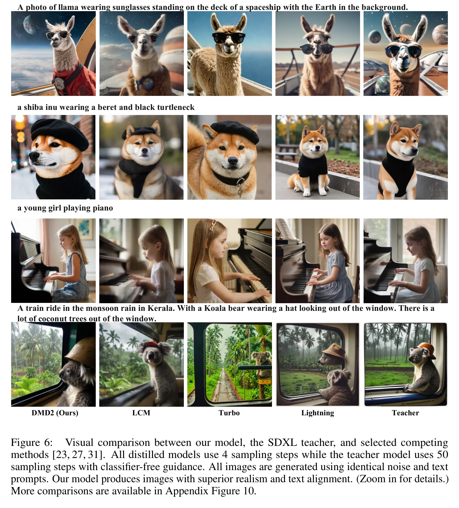

DMD的三大瓶颈：回归损失的代价
DMD（Distribution Matching Distillation, CVPR 2024）首次证明了通过分布匹配可以实现高质量的一步扩散生成。但DMD存在三个关键瓶颈，严重限制了其实际应用：
1.1 回归损失的计算地狱
DMD的回归损失 $\mathcal{L}_{\text{reg}}$ 需要教师模型生成配对的多步输出作为监督信号。对于Stable Diffusion XL（SDXL），每对数据需要约5秒的教师推理时间。覆盖LAION 6.0的1200万prompt需要约700个A100天的预计算成本。这使得DMD在大规模模型上的训练变得极其昂贵。
1.2 性能上界被锁死
更根本的问题是：回归损失强制学生模型复现教师的采样轨迹。这意味着学生的性能永远不可能超越教师——即使学生找到了更好的采样路径，回归损失也会把它拉回教师的"次优"轨迹。这在数学上建立了一个硬性性能天花板。
1.3 训练不稳定
直接移除回归损失会导致训练崩溃。消融实验显示，朴素移除回归损失后，CIFAR-10 FID从2.62飙升至3.48——生成器输出的像素亮度等统计量剧烈波动，假分数模型无法准确跟踪生成器的非平稳分布。
回归损失的悖论
回归损失在DMD中扮演了"稳定器"和"枷锁"的双重角色。它提供了训练稳定性（通过像素级锚点），但同时锁死了性能上界（通过强制轨迹对齐）。DMD2的核心洞察是：稳定性可以通过其他机制（TTUR + GAN）获得，而不需要付出性能上限的代价。这就像用学步车学骑自行车——学步车确实能防止摔倒，但也阻止了你学会真正的平衡技巧。
DMD vs DMD2 核心架构对比：DMD2通过GAN替代回归损失，引入TTUR稳定训练，支持多步生成器
TTUR: 训练稳定性的关键
DMD2的第一个核心技术贡献是两时间尺度更新规则（Two Time-Scale Update Rule, TTUR），解决了移除回归损失后的训练不稳定问题。
2.1 不稳定的根源
在DMD中，假分数模型 $\mu_\phi^{\text{fake}}$ 的训练数据来自生成器的输出。但生成器的分布 $\mathcal{G}_\theta$ 在训练过程中不断变化——如果 $\mu_\phi^{\text{fake}}$ 的更新速度跟不上 $\mathcal{G}_\theta$ 的变化速度，它就无法准确追踪生成器的当前分布，导致分数估计出现系统性偏差。
回归损失在DMD中起到了"锚定"作用：它约束生成器的输出不要偏离教师太远，从而限制了 $\mathcal{G}_\theta$ 的变化速度。移除回归损失后，生成器可以自由探索更大的参数空间，$\mathcal{G}_\theta$ 的变化速度急剧加快，$\mu_\phi^{\text{fake}}$ 跟踪不上。
2.2 TTUR的解决方案
DMD2的解决方案简洁而优雅：让 $\mu_\phi^{\text{fake}}$ 的更新频率高于生成器。具体地，每次生成器更新1步，$\mu_\phi^{\text{fake}}$ 更新5步（$N_{\text{fake}} = 5$, $N_{\text{gen}} = 1$）。这确保了假分数模型始终能准确追踪生成器的最新分布。
假分数模型更新：每 $N_{\text{fake}} = 5$ 步，用去噪得分匹配损失训练：
$$\mathcal{L}_\phi = \mathbb{E}_{t, z, \epsilon} \left[ \| \mu_\phi^{\text{fake}}(x_t, t) - x_0 \|_2^2 \right]$$生成器更新：每 $N_{\text{gen}} = 1$ 步，用分布匹配梯度训练：
$$\nabla_\theta \mathcal{L}_{\text{DMD}} = \mathbb{E}_{t, z} \left[ w_t \cdot \alpha_t \cdot \left( s_{\text{fake}}(x_t, t) - s_{\text{real}}(x_t, t) \right) \cdot \frac{\partial G_\theta(z)}{\partial \theta} \right]$$TTUR的理论基础：双时间尺度随机逼近
TTUR的数学基础来自双时间尺度随机逼近理论（Borkar, 1997）。当两个耦合的随机过程以不同速率更新时，较快的过程可以在较慢的过程"看来是准静态"的条件下收敛到其局部平衡点。在DMD2的语境中，$\mu_\phi^{\text{fake}}$（快过程）可以在生成器参数 $\theta$（慢过程）几乎不变的条件下收敛到准确的分数估计。消融实验（Table 3）验证了TTUR的有效性：加入TTUR后，FID从3.48恢复到2.61，完全匹配原始DMD的性能。
TTUR训练动态对比：无TTUR时训练损失剧烈波动，有TTUR时收敛平稳
GAN Loss: 打破教师的天花板
DMD2的第二个核心创新是引入GAN对抗损失来替代回归损失，不仅消除了预计算成本，更重要的是打破了教师模型的性能天花板。
3.1 GAN损失的设计
其中 $D$ 是判别器，$F$ 是前向扩散过程（噪声注入），$t$ 是随机采样的时间步。
关键设计：判别器不仅在干净图像上工作，还在不同噪声水平的加噪图像上工作。这使得判别器能够提供多尺度的质量信号。
3.2 判别器架构
DMD2的判别器不是独立网络，而是附加在假分数模型 $\mu_\phi^{\text{fake}}$ 的中间特征上。具体地，从 $\mu_\phi^{\text{fake}}$ 的中间块输出提取特征，通过一个轻量级分类头（4×4卷积 + GroupNorm + SiLU + 线性投影）输出真/假判别。
为什么判别器要加在假分数模型上？
这个设计有三个巧妙之处：（1）特征复用——假分数模型已经学会了提取生成图像的语义特征，判别器可以直接利用这些特征，无需从零学习；（2）计算效率——不需要额外的特征提取网络；（3）与分布匹配的协同——判别器和分数估计共享同一组特征，使得GAN信号和DMD信号在同一个特征空间中对齐，避免了梯度冲突。这一设计灵感来自SDXL-Lightning和DiffusionGAN。
3.3 为什么GAN能打破天花板？
回归损失的性能上界来自一个根本限制：它只能监督学生复现教师的输出。而GAN判别器在真实数据上训练，它的目标是区分"真实图像"和"生成图像"——不涉及教师模型。因此，即使教师模型的分数估计有系统性偏差，GAN判别器也能从真实数据中学习到正确的质量标准。
消融实验（Table 3）验证了这一点：加入GAN后，FID从2.61（TTUR，匹配DMD）进一步降至1.51，超越了所有先前方法。
GAN判别器架构：附加在假分数模型的中间层，通过轻量级分类头实现真/假判别
GAN引入的代价
GAN损失并非没有代价。首先，判别器增加了训练的内存开销和计算量。其次，GAN训练本身存在模式坍塌的风险——DMD2通过将GAN权重设为较小值（$\lambda_{\text{GAN}} = 3 \times 10^{-3}$）来缓解这一问题。第三，GAN损失在高分辨率（1024×1024）上的稳定性仍需验证——DMD2的实验主要在64×64（ImageNet）和512×512（SDXL）上进行。
从一步到多步：灵活的质量-速度权衡
原始DMD仅支持一步生成器。DMD2通过预定时间表（Predetermined Schedule）将框架扩展到多步生成器，在质量和速度之间提供更灵活的权衡。
4.1 多步生成器的工作原理
给定时间步序列 $\{t_1, t_2, \ldots, t_N\}$，多步生成器在推理时交替执行去噪和噪声注入：
输入: 噪声 $z_0 \sim \mathcal{N}(0, I)$, 时间表 $\{t_1, t_2, ..., t_N\}$
输出: 生成图像 $\hat{x}_0$
for $i = 1$ to $N$:
去噪: $\hat{x}_0^{(i)} = G_\theta(z_i, t_i)$ // 从当前噪声估计干净图像
if $i < N$:
前向扩散: $z_{i+1} = \alpha_{t_{i+1}} \cdot \hat{x}_0^{(i)} + \sigma_{t_{i+1}} \cdot \epsilon$ // 重新加噪到下一步
return $\hat{x}_0^{(N)}$
4步模型的时间表: $\{999, 749, 499, 249\}$——从最高噪声水平开始，逐步降低。
多步推理流程：4步交替去噪-加噪，从高噪声逐步降低到低噪声，每步精化生成结果
4.2 与Consistency Model的联系
这种"去噪→加噪→去噪"的交替模式与Consistency Model（Song et al., ICML 2023）有本质联系。Consistency Model学习一个函数将轨迹上的任意点映射到起点；DMD2的多步生成器则通过多次"估计起点→重新加噪→再估计"来逐步精化结果。区别在于：Consistency Model在训练时需要强制一致性约束，而DMD2通过分布匹配间接实现。
为什么4步比1步好这么多？
从信息论角度看，单步生成器需要在一次前向传播中完成从高斯噪声到自然图像的全部映射——这是一个极其复杂的函数。4步生成器将这个映射分解为4个较简单的子映射，每个子映射只需要处理部分去噪任务。这类似于数值ODE求解器：单步欧拉法精度有限，但4步即可获得显著提升。DMD2的实验表明，4步生成器（FID 19.32）可以匹配100步教师（FID 19.36），实现了25倍的加速。
反向模拟: 消除训练-推理不匹配
多步蒸馏面临一个微妙但重要的训练-推理不匹配问题。DMD2通过反向模拟（Backward Simulation）优雅地解决了这一问题。
5.1 不匹配问题
在标准的多步蒸馏训练中，每一步的输入是对真实图像加噪得到的。但在推理时，每一步的输入来自上一步生成器的输出。由于生成器的输出分布与真实图像分布存在差异，这造成了训练和推理的分布偏移（distribution shift）。
5.2 反向模拟的解决方案
DMD2的解决方案：在训练时用学生生成器的合成图像替代真实图像。具体地，从高斯噪声出发，用当前学生生成器执行完整的多步推理，得到合成图像，然后用这些合成图像作为后续训练步骤的输入。
为什么分布匹配天然适合反向模拟？
有趣的是，DMD2的分布匹配损失不依赖于学生模型的输入——它只关心输出分布是否匹配。这意味着即使训练时的输入来自学生自己的合成输出（而非真实图像），分布匹配梯度仍然是无偏的。这是DMD2相比其他多步蒸馏方法（如Consistency Distillation）的理论优势。并发工作Imagine Flash也使用了类似的反向模拟策略，但DMD2的分布匹配框架使其在理论上更加自然。
超越教师：实验结果
6.1 ImageNet-64×64 类条件生成
| 方法 | 步数 | FID ↓ |
|---|---|---|
| StyleGAN-XL | 1 | 1.52 |
| CTM (Kim et al., ICLR 2024) | 1 | 1.92 |
| iCT-deep (Song & Dhariwal, ICLR 2024 Oral) | 1 | 3.25 |
| Diff-Instruct (Luo et al., 2023) | 1 | 5.57 |
| Consistency Model (Song et al., ICML 2023) | 1 | 6.20 |
| DMD (Yin et al., CVPR 2024) | 1 | 2.62 |
| DMD2 (Ours) | 1 | 1.51 |
| DMD2 + longer training | 1 | 1.28 |
| EDM Teacher (ODE, 511步) | 511 | 2.32 |
| EDM Teacher (SDE, 511步) | 511 | 1.36 |
关键结果：DMD2一步生成FID=1.28，超越教师模型的ODE采样（2.32），接近SDE采样（1.36）。这是扩散蒸馏领域首次实现学生超越教师。
6.2 SDXL 文本到图像生成
| 方法 | 步数 | FID ↓ | CLIP ↑ |
|---|---|---|---|
| LCM-SDXL (Luo et al., 2023) | 4 | 22.16 | 0.317 |
| SDXL-Turbo (Sauer et al., 2023) | 4 | 23.19 | 0.334 |
| SDXL-Lightning (Lin et al., 2024) | 4 | 24.46 | 0.323 |
| DMD2 (Ours) | 4 | 19.32 | 0.332 |
| SDXL Teacher (cfg=6, 100步) | 100 | 19.36 | 0.332 |
关键结果：DMD2的4步生成器（FID 19.32）匹配100步教师（FID 19.36），仅需25倍更少的前向传播。
6.3 SD v1.5 COCO零样本
| 方法 | 分辨率 | 延迟 | FID ↓ |
|---|---|---|---|
| InstaFlow (Liu et al., 2023) | 512 | 0.09s | 13.10 |
| DMD (Yin et al., CVPR 2024) | 512 | 0.09s | 11.49 |
| DMD2 (Ours) | 512 | 0.09s | 8.35 |
| SD v1.5 Teacher (50步, cfg=3) | 512 | 2.59s | 8.59 |
关键结果：DMD2在SD v1.5上FID=8.35，超越教师（8.59），比DMD（11.49）提升3.14点。
6.4 消融实验
| 配置 | FID ↓ |
|---|---|
| DMD（原始，含回归损失） | 2.62 |
| DMD - 回归损失 | 3.48 |
| DMD - 回归损失 + TTUR | 2.61 |
| DMD - 回归损失 + TTUR + GAN | 1.51 |
消融实验清晰地展示了每个组件的贡献：TTUR恢复训练稳定性（3.48→2.61），GAN打破性能天花板（2.61→1.51）。

DMD2与其他方法的视觉对比：DMD2在细节丰富度和文本一致性上均优于竞品
从DMD到DMD2：完整对比
DMD vs DMD2 完整对比：每个维度的改进和对应的性能提升
核心算法的PyTorch实现
8.1 TTUR训练循环
def dmd2_training_step( generator, # 一步/多步生成器 G_θ real_model, # 冻结的教师扩散模型 μ_real fake_model, # 可训练的假分数模型 μ_fake discriminator, # GAN判别器 D (附加在fake_model中间层) z, # 噪声输入 [B, C, H, W] noise_schedule, # 噪声调度器 (α_t, σ_t) N_fake=5, # 假分数模型更新频率 lambda_gan=3e-3, # GAN损失权重 ): # ===== TTUR: 先更新假分数模型 N_fake 次 ===== for _ in range(N_fake): # 用生成器的当前输出训练假分数模型 with torch.no_grad(): x_fake = generator(z) # 去噪得分匹配损失 t = torch.randint(0, 1000, (z.shape[0],)) alpha_t, sigma_t = noise_schedule.get_schedule(t) epsilon = torch.randn_like(x_fake) x_t = alpha_t[:, None, None, None] * x_fake + \ sigma_t[:, None, None, None] * epsilon pred = fake_model(x_t, t) loss_fake = F.mse_loss(pred, x_fake) loss_fake.backward() optimizer_F.step() optimizer_F.zero_grad() # ===== 更新生成器 1 次 ===== x_fake = generator(z) # 需要梯度 # 分布匹配损失 (Eq.2) t = torch.randint(0, 1000, (z.shape[0],)) alpha_t, sigma_t = noise_schedule.get_schedule(t) epsilon = torch.randn_like(x_fake) x_t = alpha_t[:, None, None, None] * x_fake + \ sigma_t[:, None, None, None] * epsilon # 真实分数 vs 假分数 with torch.no_grad(): s_real = score_fn(real_model, x_t, t, alpha_t, sigma_t) s_fake = score_fn(fake_model, x_t, t, alpha_t, sigma_t) score_diff = (s_fake - s_real).detach() dmd_loss = (score_diff * x_fake).mean() # GAN损失 (Eq.4) # 判别器在加噪图像上工作 t_gan = torch.randint(0, 1000, (z.shape[0],)) alpha_g, sigma_g = noise_schedule.get_schedule(t_gan) x_real_noisy = alpha_g[:, None, None, None] * x_real + \ sigma_g[:, None, None, None] * torch.randn_like(x_real) x_fake_noisy = alpha_g[:, None, None, None] * x_fake.detach() + \ sigma_g[:, None, None, None] * torch.randn_like(x_fake) # 判别器特征来自fake_model的中间层 real_logits = discriminator(fake_model.get_features(x_real_noisy, t_gan)) fake_logits = discriminator(fake_model.get_features(x_fake_noisy, t_gan)) gan_loss = F.binary_cross_entropy_with_logits(real_logits, torch.ones_like(real_logits)) + \ F.binary_cross_entropy_with_logits(fake_logits, torch.zeros_like(fake_logits)) # 总损失 total_loss = dmd_loss + lambda_gan * gan_loss total_loss.backward() optimizer_G.step() optimizer_G.zero_grad()
8.2 多步推理与反向模拟
def multi_step_generate( generator, # 多步生成器 G_θ(z, t) z, # 初始噪声 [B, C, H, W] schedule, # 时间表 {999, 749, 499, 249} noise_schedule, # 噪声调度器 ): """多步推理：去噪→加噪→去噪交替""" x = z for i, t_i in enumerate(schedule): # 去噪：估计干净图像 x_hat = generator(x, t_i) # [B, 3, H, W] # 如果不是最后一步，重新加噪 if i < len(schedule) - 1: t_next = schedule[i + 1] alpha, sigma = noise_schedule.get_schedule(t_next) epsilon = torch.randn_like(x_hat) x = alpha * x_hat + sigma * epsilon else: x = x_hat return x # 最终输出 def backward_simulation( generator, z, schedule, noise_schedule, """反向模拟：用学生自己的输出替代真实图像""" ): # 用当前学生执行完整多步推理 x_synthetic = multi_step_generate( generator, z, schedule, noise_schedule ) # 后续训练步骤用 x_synthetic 替代真实图像 return x_synthetic
未解之谜与前沿方向
DMD2在1024×1024以上的分辨率上能否稳定工作？
DMD2的实验主要在64×64（ImageNet）和512×512（SDXL）上进行。当分辨率提升到1024×1024或更高时，GAN判别器的训练稳定性可能面临挑战——高分辨率图像的判别器需要更大的感受野和更深的网络，这会增加训练的不稳定性。此外，分布匹配梯度在高维空间中的方差也会增大。
研究方向：探索多尺度判别器（如StyleGAN2的架构）在DMD2框架中的应用，分析分辨率对分布匹配梯度方差的影响。
多步生成器的时间表 $\{t_1, t_2, ..., t_N\}$ 如何最优选择？
DMD2使用均匀间隔的时间表 $\{999, 749, 499, 249\}$，但没有任何理论依据表明这是最优的。从信息论角度看，不同噪声水平的去噪难度不同——高噪声区域的去噪信息量更大，可能需要更多的步数分配。
研究方向：将时间表设计建模为一个优化问题，目标是最小化生成质量与步数的帕累托前沿。参考DPM-Solver（Lu et al., 2022）中的时间表优化理论。
DMD损失和GAN损失之间是否存在更深层的数学联系？
DMD的分布匹配梯度形式上类似于f-GAN（Nowozin et al., 2016）中使用KL散度作为f-散度的特例。而DMD2引入的GAN损失使用的是标准的JS散度（通过交叉熵实现）。一个未回答的问题是：是否存在一个统一的f-散度框架，将DMD和GAN损失统一为同一个优化目标的两个特例？如果存在，就可以通过选择不同的f-散度来系统性地搜索最优组合。
研究方向：利用f-GAN理论框架，推导DMD2的统一变分下界，分析不同f-散度选择对蒸馏质量的影响。
DMD2的框架能否直接应用于视频扩散模型？
视频扩散模型（如SVD, Wan）的推理成本比图像模型高数个数量级（数千帧×50步），蒸馏的潜在收益巨大。但视频的时序一致性给分布匹配带来新挑战：生成器的每一帧都依赖于前一帧的输出，分布匹配的梯度信号需要跨时间步传播。
研究方向：将DMD2的TTUR和GAN损失扩展到视频潜空间，引入光流或时序注意力作为一致性正则化项。参考AnimateDiff的时序模块设计。
DMD2蒸馏后的一步模型能否支持图像编辑（如inpainting、style transfer）？
多步扩散模型的一个重要优势是中间步骤的可控性——通过修改中间噪声可以实现各种编辑操作。一步生成器跳过了所有中间步骤，传统的编辑方法（如Prompt-to-Prompt）无法直接应用。DMD2的多步生成器可能保留了部分中间步骤的可控性，但这一点尚未被探索。
研究方向：分析DMD2多步生成器的中间步骤是否保留了足够的语义信息用于编辑操作，设计适配一步/少步生成器的编辑方法。